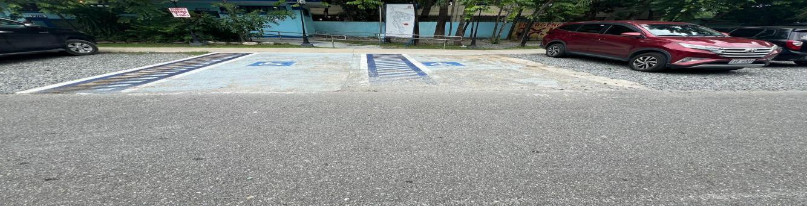
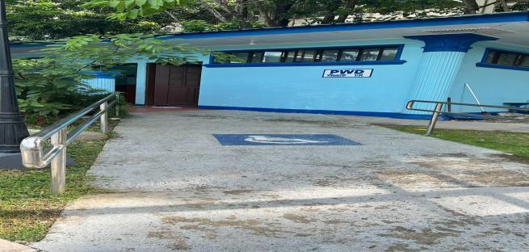
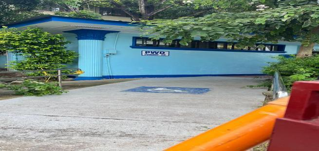
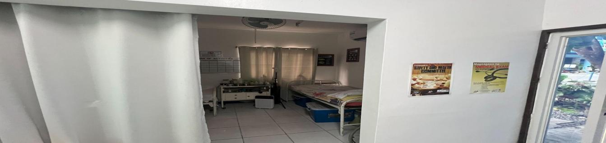
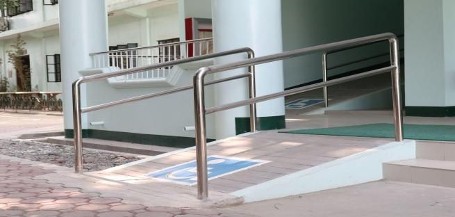

Urdaneta City University (UCU) is deeply committed to building an inclusive and accessible campus environment where every individual—particularly persons with disabilities (PWD), those with special needs, and mothers requiring maternity care—can participate fully and equitably in university life. This commitment is reflected in the university’s carefully designed facilities, which prioritize comfort, accessibility, and dignity.

Designated parking spaces for PWD are strategically located near campus buildings to ensure safe and convenient access to facilities. These spaces are thoughtfully designed to meet the unique mobility needs of PWD, emphasizing the university’s dedication to accessibility and inclusivity.

Comfort Room (Male)
Comfort Room (Female)To further support students, staff, and visitors with disabilities, UCU provides accessible toilets designed with ample maneuvering space. These facilities are equipped with grab bars, lower sinks, and other accessibility features to ensure safety, comfort, and independence.

Recognizing the needs of faculty and staff who are breastfeeding, the university has established a dedicated Lactation Room. This private and secure space offers a supportive environment where mothers can comfortably balance their professional responsibilities with childcare needs. By providing this facility, UCU affirms its commitment to workplace inclusivity and employee well-being.

To ensure barrier-free movement across the campus, PWD ramps are strategically placed in key areas, connecting buildings and facilities seamlessly. Built to meet safety and accessibility standards, these ramps enable individuals with mobility challenges to navigate the university with ease and independence.
The PWD Learning Resource Center serves as a vital hub of support for students with disabilities. It offers specialized materials, assistive technologies, counseling, and tailored resources to enhance academic success. Beyond its practical role, the center fosters a sense of belonging by providing a welcoming space for collaboration, learning, and peer support.
Through these initiatives—accessible parking, specialized toilets, a lactation room, the PWD Learning Resource Center, and ramps—Urdaneta City University exemplifies its commitment to inclusivity, equity, and accessibility. By addressing the diverse needs of its community, the university not only removes physical barriers but also fosters a culture of respect, care, and opportunity for all.